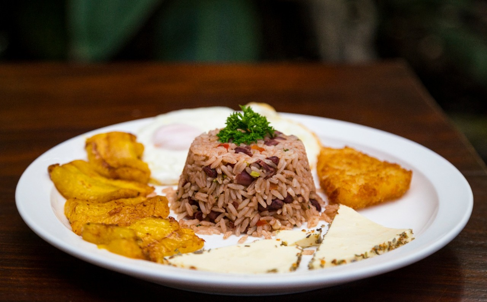
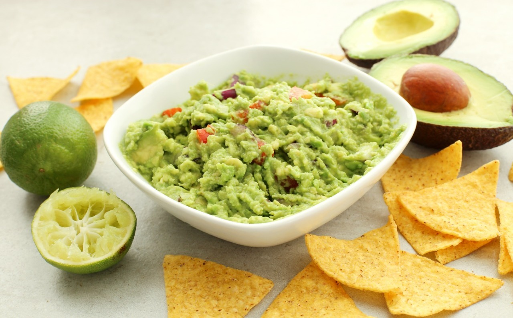
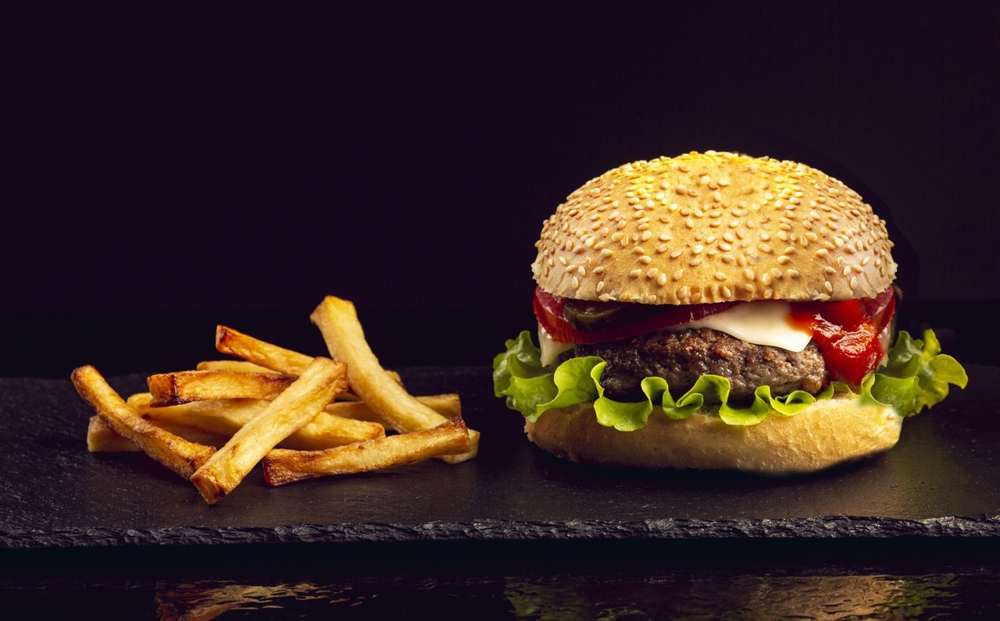
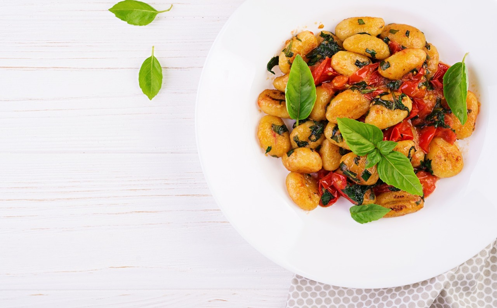

Recetas Recomendadas
Arroz congris con tostones
Tradicional receta cubana. Arroz, moros, un sofrito de cebolla y cerdo o carne de res. La versión vegetariana es sin carne y sale delicioso igual. Para complementar plátano frito. Solo falta la salsa como música de fondo.
Guacamole casero
Palta, aguacate, como lo llamen en tu lugar. Esta fruta llena de vitamina D en combinación con ciboulette y tomate + sal y limón son tu complemento para unos nachos sin dudas tu entrante favorito.
Hamburguesa con papas
Burger, Mc, Wendys? No. Mejor en casa, mejor con el sabor de Make at Home. Carne o pollo, lechuga, tomate, cebolla y queso cheddar. Papas rústicas para acompañar y un buen gym para continuar.
Gnocchi Gourmet
Desde Italia para el mundo. De papa o quizás de calabaza o ricota con una suave salsa filetto con hojas de albahaca para decorar. Queso rallado ¿si o no? Lo dejamos a tu piacere!
Medialunas de Manteca
Voilà! Me siento en París con estos suaves croissants. Medialunas recién horneadas pintadas con manteca derretida, un café y listo para comenzar un nuevo día.